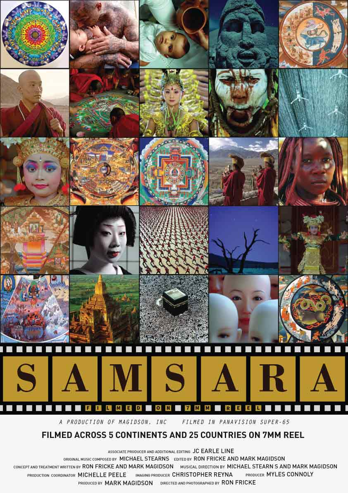

Samsara
Graphic Design
- Portfolio
- Samsara
Project Summary
Samsara is a 2011 non-narrative documentary film, directed by Ron Fricke and produced by Mark Magidson, who also collaborated on Baraka (1992), a film of a similar vein. Samsara was filmed over five years in 25 countries around the world. It was shot in 70 mm format and output to digital format. The film premiered at the 2011 Toronto International Film Festival and received a limited release in August 2012.
The task given was to design a poster for the movie.
The poster is based on the fact that the movie was shot in 25 countries in 5 continents, and so thereby a
a 5 cross 5 matrix is used to showcase the 25 different snapshots from the movie.The 70 mm film reel at the bottom symbolizes the fact that
the movie was shot in 70 mm format.

Client
Class Assignment
Duration
Nov'14
Project Tags
Poster Design, Graphic Design
Share